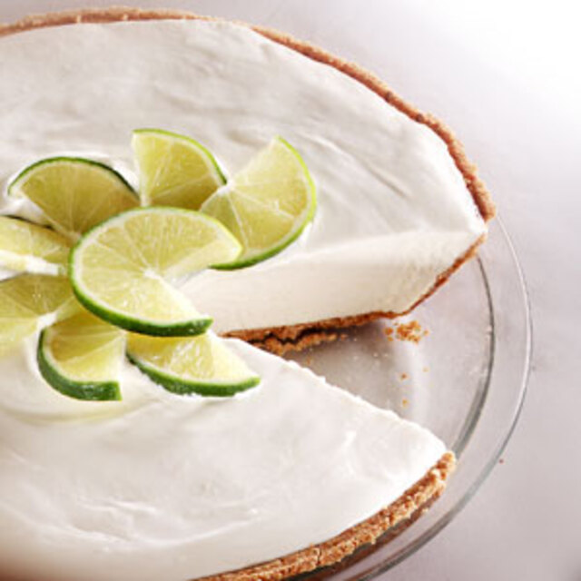

Primer paso tritura las galletas Maria en la licuadora(deben quedar como polvo).
Segundo paso mezclalas con la mantequilla derretida hasta formar una masa arenosa.
Tercer paso coloca la mezcla en un molde y aplástala bien en el fondo (puedes usar una cuchara).
Cuarto paso refrigera 15 minutos para que se compacte.
Quinto paso en la licuadora,pon la leche condensada y la leche evaporada y licua, poco a poco ve anadiendo el jugo de limon hasta que este espesa.
Y mezcla hasta obtener una crema suave.
Por ultimo saca el molde del refrigerador y vacía encima la mezcla de limon y alisala poco a poco con una espatula.
Ya con todo esto refrigera 4 horas o toda la noche ya que es lo mas recomendable .

PAY DE LIMON
Aprende a preparar un delicioso pay de limon para disfrutar en familia o con quien gustes